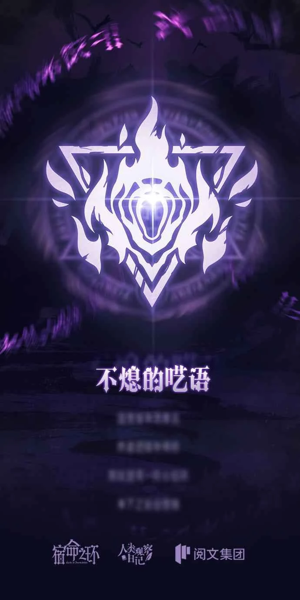

Overview
The Inextinguishable Ravings seemed to share His origin with the residual psyche of the Original Creator within the Beyonder characteristics. It was the source of all ravings.
Klein Moretti, Book 2, chapter 1164
The Inextinguishable Ravings is one of the Outer Deities from the Cosmos that attempted to invade Earth. "He" is the current owner of the Everlasting Pathway.
"He" seemed to share "His" origin with the residual psyche of the Original Creator within the Beyonder Characteristics - the source of all ravings.1Book 2, chapter 1164
Honorific Name
The Philosophical Essence; The Inextinguishable Ravings; The Symbolism of Life's Spirit; The Eternal Consciousness (哲学的本源， 不熄的呓语， 生灵精神的象征， 永不磨灭的意识)
Symbols, Authorities & Abilities
"He" possesses full Authority over the Everlasting and the corresponding Symbols, which include but are not limited to the following:
- Everlasting: Authorities and Symbols of Philosophy, Consciousness and Spirit.
The Symbols, Authorities, and Abilities "He" possesses and displays at the Above the Sequence level include:
- Inextinguishable Ravings: "His" ravings primarily awaken the spiritual imprint of the Original Creator, which resided within all Sefirot, Uniqueness, and Beyonder characteristics. No one can escape it; no one can remain unaffected.2
- "He" is capable of ignoring the interference of Marionettes, Avatars, and Afterimages to directly project "His" voice into Sefirot and Uniquenesses, transmitting "His" madness and implanting "His" intent.1
- Sefirot, Uniquenesses, and Beyonder characteristics directly derived from the Original Creator would be heavily affected by this influence.2
- Great Old Ones that were not directly born from the Original Creator but instead, from the union between the Original Creator and the Mother Goddess of Depravity, can barely endure this influence. Due to the intermediary layer, the spiritual imprint within "Them" was relatively weak.
- "He" is capable of transforming into frenzied thoughts and formless consciousness.3
- Consciousness & Spirit: "He" is the symbol of Consciousness and Spirit, injuring "Him" would cause nearby entities to experience chaotic Consciousness and disoriented Spirits. The disturbance would gradually spread outward to other star dominions, weakening as it expanded until it eventually dissipated.7
- The Symbol of Life's Spirit: "He" can awaken and corrupt the lingering Spirits within aggregate beings that are composed of multiple Spirits, making "Him" their nemesis.3Book 2, chapter 1168
- The Golden Buddha, and the Pitch-Black Fiend - aggregate entities composed of multiple consciousnesses and the lingering Spirits of many Dao integrators - were forced to suppress "Themselves", unable to do anything else.
- Eternal Consciousness: "He" is intwined with the concepts of Consciousness and Spirits, making "Him" immortal.8
- The Philosophical Essence: "He" is able to transmit the First Philosophy, causing both physical and mental anguish in all Beyonders who can hear unknown and mystical voices. The higher the Sequence, the greater the impact.9
Countering Symbols, Authorities & Abilities
Certain Symbols, Authorities, and Abilities of other Great Old Ones can counter some of "Their" powers, which include but are not limited to the following:
- Eternal Darkness:
- Darkness counters The Symbol of Life's Spirit.
- "They" can put "Themselves" or "Their" allies into a state of Slumber. This can let "Their" thoughts, spirit, the madness within "Their" Sefirot, and complex and chaotic spirits such as those of the Dao Integrators fall into stillness, and allow "Them" to escape the influence of the Inextinguishable Ravings.2 3
- Primordial Hunger:
- Devouring counters Inextinguishable Ravings.
- "He" can Devour the Ravings from the Inextinguishable Ravings within "His" own mind.2
Appearance
"He" doesn't have a true physical form but attaches "Himself" to certain objects, causing them to exhibit specific colors or appearances.1
Background
According to the Seven Lights, ever since the Oldest One awakened and split apart, the most powerful Outer Deities in the entire universe, including the Inextinguishable Ravings, gathered around this tiny solar system.
Some of "Them" wish to retrieve "Their" Sefirot and Beyonder Characteristics that had been ripped from "Them" and were attracted here. Some of "Them" hope to get neighbouring sefirot and high-level characteristics which ‘They’ can accommodate.10
The Inextinguishable Ravings was highly likely to covet the Knowledge Moor and aimed to control the Chaos Sea, accommodating the Uniqueness of the Hanged Man, White Tower, and Visionary Pathways.1 The Tenebrous World was also an option for "Him", though it was not an optimal choice, one "He" would usually avoid.3
History
During Project Vortex, the Inextinguishable Ravings sent a bit of its power through the barrier via the Endless Cosmos. It transmitted the First Philosophy, allowing the Immortal Voice to penetrate the barrier in small amounts. These would be received by all who can hear unknown and mystical voices. The higher the Sequence, the greater the impact.4Book 2, chapter 867
This was an unprecedented event for many Beyonders of the Hermit Pathway who suddenly heard this sound. Even without carefully distinguishing the content of the sounds, they suffered severe effects. However, compared to the indoctrination of the Hidden Sage, this was more bearable and did not push them to the brink of losing control.
Upon hearing these mysterious terrifying sounds, most Beyonders of the Hermit Pathway witnessed a phantom light composed of complex information writhing madly like a shedding giant snake in an unknown place. Similarly, Beyonders of the Hanged Man Pathway also heard this sound. Some Angels, Saints, and Oracles of the Aurora Order also suffered intense and painful effects as a result.4
Some remnants of the Knowledge Moor lie in Fourth Epoch Trier. Followers of the Inextinguishable Ravings planned to approach it with the help of the Mirror People after Project Vortex concluded.4
Trivia
- When the Inextinguishable Ravings transmitted its power through the barrier, Fors Wall sealed Cattleya's listening abilities in both the literal and mystical senses, with layers of dazzling starlight covering her ears. This significantly reduced the effect of the sounds.4
- The Inextinguishable Ravings and the Mother Tree of Desire can devour each other.11
Translations
| Language | Name |
|---|---|
| Chinese | 不熄的呓语 |
| Thai | เสียงพร่ำเพ้อไม่สิ้นสุด |
References
- Book 2, chapter 1164.
- Book 2, chapter 1167.
- Book 2, chapter 1168.
- Book 2, chapter 867.
- Author's WeChat post ir, part 2.
- Author's WeChat post mgod, Screenshot.
- Book 2, chapter 1169.
- Author's WeChat post ir.
- Book 2, chapter 867.
- Book 1, chapter 1271.
- Author's WeChat post mtod, part 20.
Source
Article adapted from the Inextinguishable Ravings article on the Lord of the Mysteries Fandom wiki (CC BY-SA). Chapter numbers follow that article's citation format.
Image gallery
